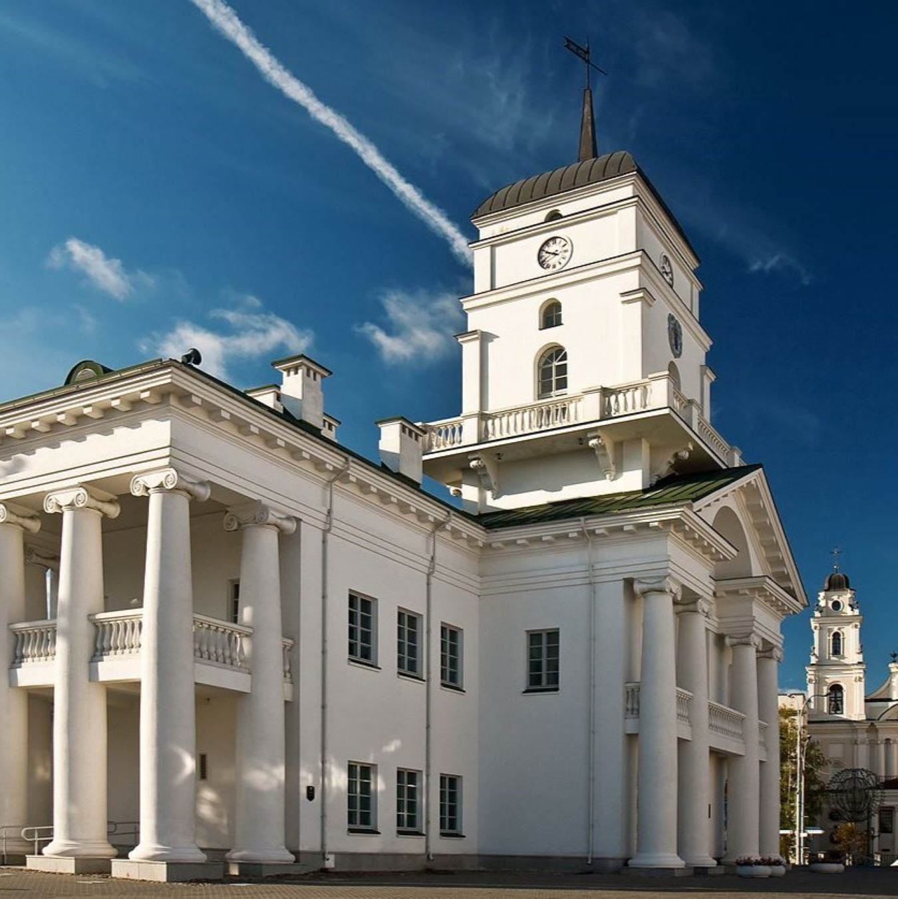

Минская городская ратуша |
|  |
|
Минская ратуша – главное украшение площади Свободы и символ исторической памяти минчан. Здание было восстановлено в 2002 – 2004 гг. на том месте и в том виде, в котором город запомнил его в середине XIX века. С 2012 года ратуша стала доступна для посещения, хотя продолжает выполнять и функции административного здания. |